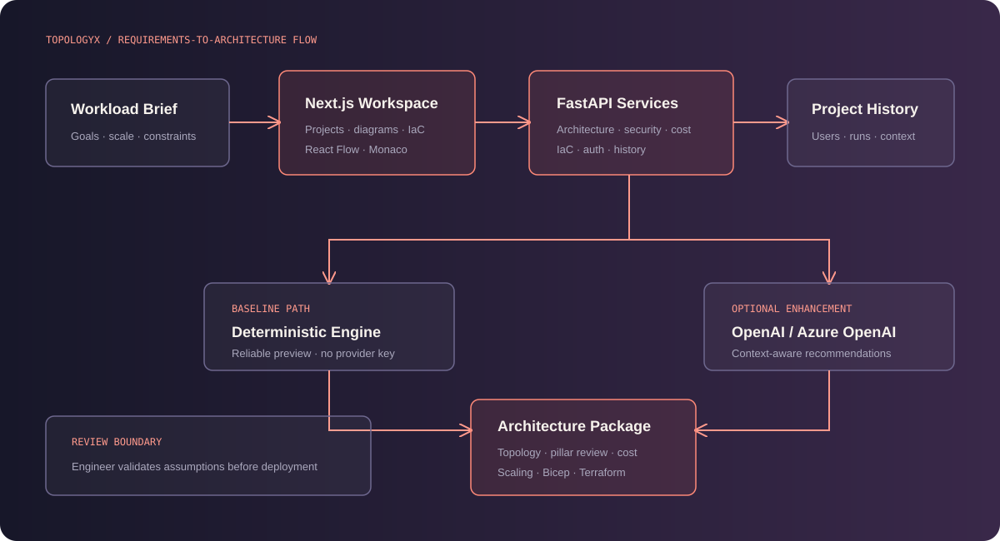

Next.js workspace
Project management, prompt-driven generation, React Flow diagrams and Monaco-based IaC review.
An AI architecture copilot that converts natural-language system requirements into explainable Azure designs, interactive topology, security and cost analysis, and deployable IaC starting points.
Early cloud architecture work often lives across disconnected diagrams, estimates, security notes and IaC drafts. That fragmentation makes it difficult to compare decisions, explain tradeoffs and preserve a design as requirements evolve.
TopologyX accepts a natural-language workload brief and produces a connected architecture package: recommended Azure services, an interactive graph, Well-Architected observations, a monthly cost estimate, scaling guidance, and Bicep and Terraform drafts.
Requirements → Normalize context → Select Azure services → Build topology → Review pillars → Estimate cost → Generate Bicep + Terraform → Save run

Project management, prompt-driven generation, React Flow diagrams and Monaco-based IaC review.
Separates architecture, security, cost and IaC generation behind authenticated APIs.
A local rules engine provides stable output; OpenAI or Azure OpenAI can enhance the result when configured.
Per-user workspaces and Alembic migrations preserve architecture inputs, outputs and generation context.
Preview mode keeps the architecture experience available with deterministic local generation, no login and no external model call.
The backend falls back to deterministic generation when an AI provider is unavailable, keeping the core workflow predictable and demonstrable.
Outputs are framed around reliability, security, cost optimization, operational excellence and performance efficiency rather than producing a diagram alone.